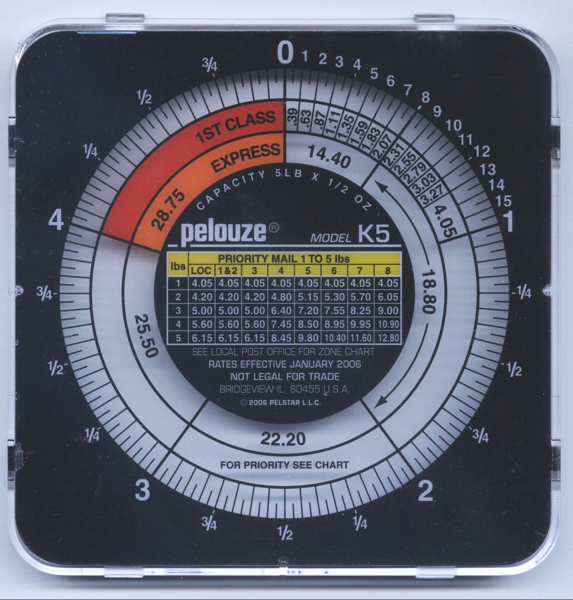
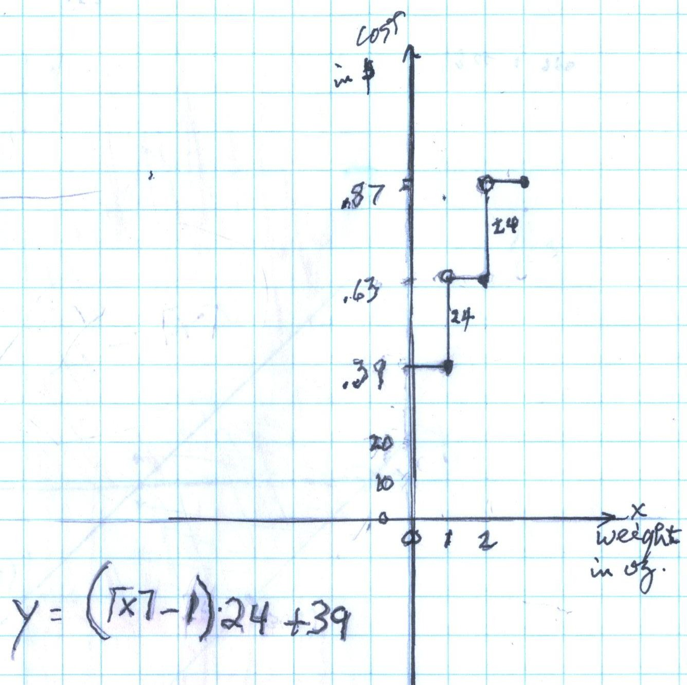

The Postal-Scale Function
In an Algebra 2 book, Shelby, Katy, and Don found the problem of finding the function which describes the cost of sending a letter by USPS 1st class mail. Don found the scale which he uses, shown below. Katy made a table
weight (oz) 0-1 1-2 2-3 3-4
cost($) .39 .63 .87 1.11

The interesting thing is that any # of
ounces between 0-1, including 1, the cost is $.39; between 1-2 ounces, the cost
is $.63. They discovered that after $.39 for 1 ounce, the cost goes up the
same, $.24. So if the weight was 1.25 ounces or 1.8 ounces, the cost would
be the same, $.63. In the book
"Mathematica 5" by Stephen Wolfram, Don found the name of this
function, the ceiling function.
The ceiling of x is written as  .
.
Shelby and Katy made the graph and wrote the equation.
The graph of the USPS cost ($) vs. weight (oz) of a letter

Great job, Katy and Shelby!!!